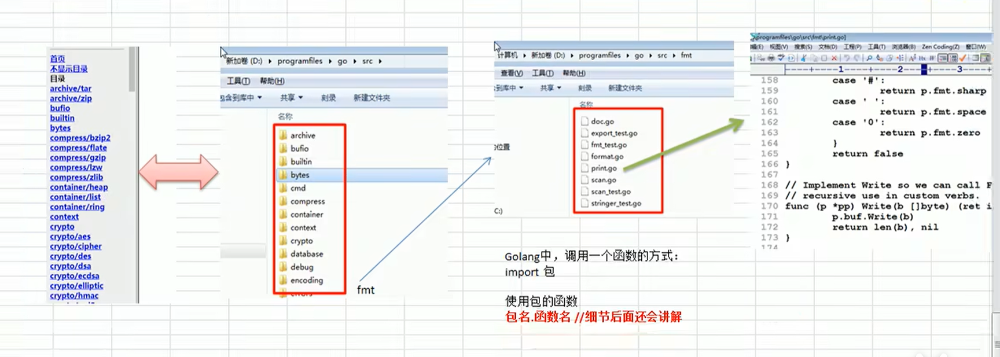

golang学习记录（2）
Golang开发基础
Golang程序开发和基本结构
首先要创建golang开发的目录，可以创建成下面的形式 > go_project > - src > * go_code > * project01 > * main > * hello.go > * package > * project02 > * main > * package
其中hello.go就是一个简单的go程序，代码如下：
package main
import "fmt"
func main(){
fmt.Println("hello world!")
}说明： （1）go的文件后缀就是“.go”，在go中，一个文件就是一个包，一个包可以包含多个文件，但是一个文件只能包含一个包。 （2）package main 表示当前文件所在的包名，必须是main包，否则无法执行。 （3）在go中，每个文件都必须归属于一个包 （4）import “fmt” 表示引入fmt包，fmt包是go语言标准库中的一个包，提供了格式化输入输出的功能。引入后，就可以使用fmt包的函数，比如fmt.Println()。 （5）func main() 表示main函数，是程序的入口函数，程序从main函数开始执行。其中func是关键字，表示一个函数，main是函数名，是一个主函数，是程序的入口。 （6）fmt.Println(“hello world!”)表示调用fmt包中的Println函数，打印输出hello world!。
Golang执行流程分析
Golang程序的执行流程
首先，我们要写完一个go程序
然后，要对写完的程序进行编译，生成一个可执行文件，使用“go build”命令
go build hello.go最后，执行可执行文件，得到运行结果。
同时，也可以直接使用“go run”命令，直接运行go程序，不需要编译，也不需要生成可执行文件。但是，每次运行都会重新编译，效率较低，并且执行时间较长。
go run hello.go总的来说，go语言的执行流程是：编写代码 -> 编译生成可执行文件 -> 运行可执行文件。

前者运行时间短 后者运行时间长 实际开发中用到的是前者，后者一般用于测试。
不同执行流程区别
（1）go语言是编译型语言，需要先编译成可执行文件，然后才能运行。
（2）如果先编译生成了可执行文件，可以将可执行文件拷贝到其他机器上，直接运行。
（3）如果使用 go run 命令运行源码，想要在另一台机器上运行，需要先安装go环境，否则无法执行
（4） 在编译时，编译器会将程序运行依赖的库文件包含在可执行文件中，所以可执行文件会变得很大，且能够独立运行。
Golang编译运行说明
编译
通过编译器将go源码编译成二进制文件
在编译时指定生成的文件名：go build -o test.exe hello.go，其中在Windows下生成文件的后缀必须是exe，在Linux下生成文件的后缀可以是exe或者没有后缀。
如果源码中没有错误，能够正常运行编译，如果源码中有错，会在错误的那行报错，并且编译失败。
运行
1、生成可执行文件，然后运行。
2、直接使用go run命令运行，不需要编译，不需要生成可执行文件。
Golang语法要求和注意事项
golang源文件以go为扩展名，编译后生成的可执行文件以exe为扩展名。
go程序的执行入口是main函数
go语言严格区分大小写
go方法由一条条语句构成，语句后面不需要分号
在go语言中，一行代表一条语句结束。一行就写一条语句，go编译器是一行行进行编译的，一行中不能写多条语句。
go语言中定义的变量或者import的包如果没有使用到，代码就不能通过编译（提升代码的性能）
括号是成对出现的，缺少会编译错误。
Golang的转义字符
- 个制表位，实现对齐功能
- 换行符与
- \ 一个反斜杠字符
- " 一个双引号字符
- 个回车符
Golang开发注释
1、单行注释：//
2、多行注释（块注释）：/* */
Golang代码风格
1、 尽量使用行注释，注释方法和语句
2、要有正确的缩进和空行（空白），shift+tab向左缩进，tab向右缩进，或者使用gofmt命令进行格式化，例如：gofmt -w main.go(可以将格式化后的内容重新写入文件)，gofmt main.go(可以将格式化后的内容输出到终端，不能写入文件)
3、 运算符两边加空格
4、函数的大括号 
5、 关键字和操作符之间加空格
6、 函数名、变量名、常量名、结构体字段名使用驼峰式命名法
7、一行不要超过80个字符，超过80个字符需要换行
Golang官方指南(可能要科学上网)
官方网站：运行和学习
中文编程指南：中文指南，也有其它语言的
官方的包：关于包的使用和说明
在官网可以查看代码的运行结果 tour run 可以运行代码
Golang语言标准API
什么是API？
应用程序编程接口（Application Programming Interface），就是一个函数
Golang提供了大量的标准库
Golang中文网 : 中文关于包的介绍和使用说明
在Go中：包->源文件->函数 
要使用函数就直接import导入 ### Golang开发常见错误和解决方法
注释的目的是提升可阅读性，让代码更容易理解
1、显示找不到文件 源文件名写错、不存在或者当前的路径错误。
2、语法错误 违反语法规则，括号，引号匹配失败海诺这拼错单词。 通过查看错误提示信息，找到错误的位置，然后修改。
注意：“1”和”l”在编程的时候比较难区分